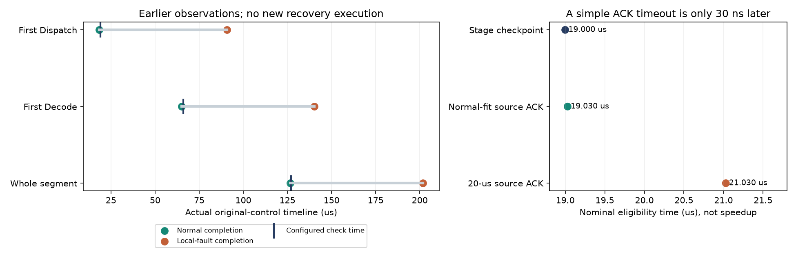

2026-10-30 · 128端点Clos · 原网络只读分析 · 零新增网络、构建或GPU执行
阶段进度有用，但已有消息超时也能早发现
上一轮按完整任务设置127微秒门槛，备用来不及追上原任务。本轮发现：19微秒时已有通信阶段信号可区分这两条历史轨迹；但普通源端确认超时经过相同正常样本校准，在19.030微秒也能出现同样的等待信号，只晚30纳秒。因此没有证据说明需要新的复杂检测机制。
实际读了什么，没做什么
仅复核已有正常、局部短故障两份无备用控制：128模拟端点Clos，四组EP32，目标4份/健康11份不同专家路由原件，原层3/4、连续两步Decode，原SR和参考DCQCN。局部仍是GPU28前20微秒DATA丢弃，原网络未修改或重跑。
准备器导出严格早于检查时刻的observed/；18次独立判断进程只获得初始计划和过去事件，不读取未来结果、故障或包路径；评价器之后再读取完整记录核对。本轮只判断“是否值得考虑备用”，不提交备用，不产生实际通知或加速结果。
更早看到异常，具体早在哪里

门槛只从正常样本严格向上取整到下一个1微秒网格。首个Dispatch检查比完整任务检查提前108微秒，第一步检查提前61微秒。这些是判断时刻差，不能当推理加速。若在19或66微秒仍只看完整结果，正常任务也尚未完成，会被纳入备用候选；已有阶段完成标志能避免这两次正常候选。
网络侧：不是还没开始计算，而是3条通信在等确认
19微秒以前的回调显示，32个rank的首层pack均已完成，26条Dispatch消息均已实际post：
故障中未确认的是消息37/68/99，分别从rank4/8/12发往GPU28，各14,464字节，实际post均在1.030微秒；19微秒时接收与源确认都还未完成。这说明当前等待已经落在已提交通信上，但仅凭确认未到仍不能区别丢包、拥塞或确认路径排队，不能将超时直接当成丢包诊断。
为什么更强的已有基线改变了研究判断
仓库已有源端确认watchdog：按实际SEND post加声明期限，确认到达就取消。正常首层消息的最大post到确认跨度为17.347微秒，按相同严格取整规则得到18微秒期限；加1.030微秒post时刻，就是19.030微秒。正常26条均不满足超时条件，故障3条满足；与19微秒阶段检查只差30纳秒。
现有文档中的20微秒示例参数得到21.030微秒，也只有故障3条满足条件。20微秒不是默认值，18微秒也不是p99或生产最优值。这里仅在旧回调上核对已有触发条件，原控制没有启用watchdog，所以不能写成“本轮实际发出3次通知”。当前完整备用模式也禁止直接并用watchdog，真实联动需要独立平台实现与验收。
相对完整任务超时的108微秒提前量，不能全部归给新的阶段或网络语义。简单消息超时已经给出相近信号。继续研究必须回答如何在这些成熟信号之上减少无效备用、控制共享网络代价，或者在实际完成约束下选择更合适的恢复单位。
一个完成标志为何已足够
完整过去事件分别有1,782～9,422条；针对一个固定检查点，最小视图只需“已收到该完成回调”这一事实，正常记录1条、故障记录0条，六种检查均与全成员判断一致。当前全EP成员到齐后，以零协调时延同步完成所有GATE，所以一个固定rank的GATE完成即可代表这个已定义阶段。这是模型语义，不是新遥测压缩或生产监测成本节省。
缺少标志只在观测完整、时钟与身份可靠的前提下表示尚未完成；生产遥测丢失或传递延迟可能改变判断。原生OBSERVE是被动观察，不是可提交任务的DECIDE；管道等待不推进仿真时间，也没有模拟分布式监控协调成本。
系统产出与验收
交付了可重复运行的计划准备、严格过去前缀导出、独立判断、完整历史评价、网络回调解释和已有watchdog参考脚本。没有改平台或重传协议。两份原始网络公开rdma-check通过、全部文件SHA保持；18次判断和42项未来/同刻、重复、缺序、时钟倒退及身份篡改拒绝通过。判断输出和真假评价分开保存，示例最小输入可脱离路由数据做CPU演示。
仅一个确定性正常样本与一个已知局部故障，不是盲测、准确率或故障概率估计。真实的是专家选择，计算与BF16消息布局是声明，阶段协调是下界；没有完整671B、满载128卡、硬件校准、吞吐或新算法收益。图像与静态资源核查见最终验收，未做浏览器渲染。
下一步的实际门槛
先把普通源确认超时或已有进度标志与完整备用调度接起来，明确同一ns-3时刻的决策、一次触发、后续回退门槛、资源准入和真实KV释放；原图门限、ACK及迟到输家继续保留。以同一正常与故障输入，和只改固定启动时间的简单对照比较，再测目标、健康任务、实际额外字节和收尾。若简单已有基线足够，就不再为检测信号开发复杂方案。
早期检查通过只表示当前阶段已完成，不能永久禁用后续故障保护。较小恢复单位还须有实际通信消费、一次归并及迟到隔离依据。没有这些实现和实际网络对照，就不能报恢复收益或创新。